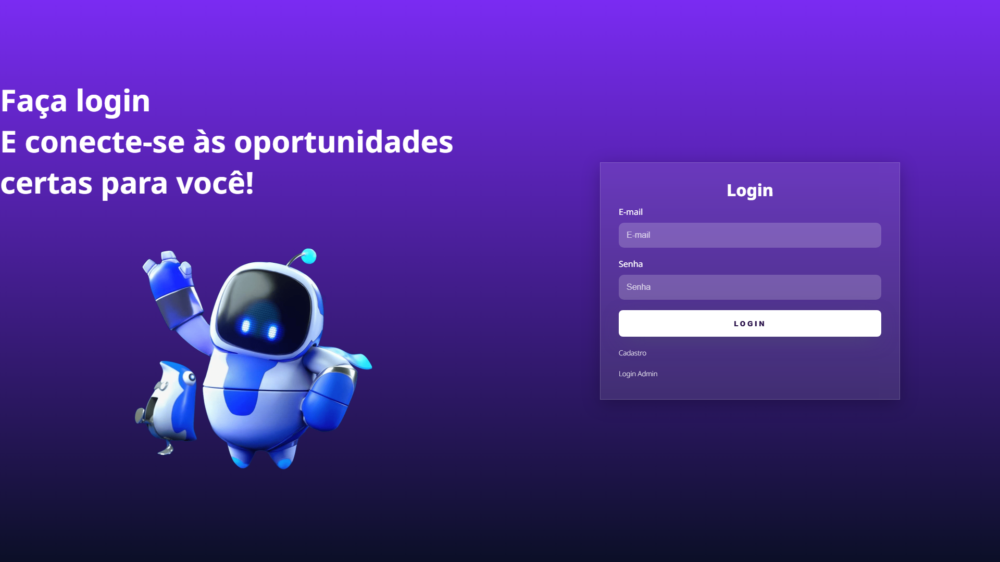
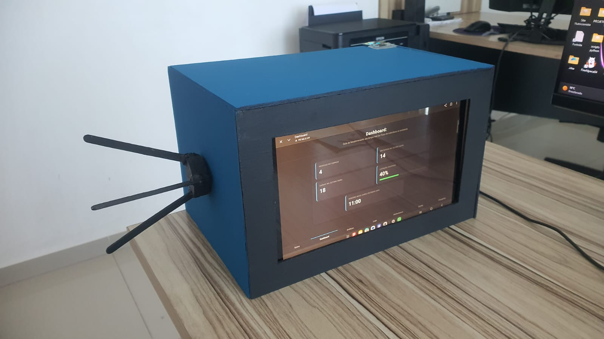
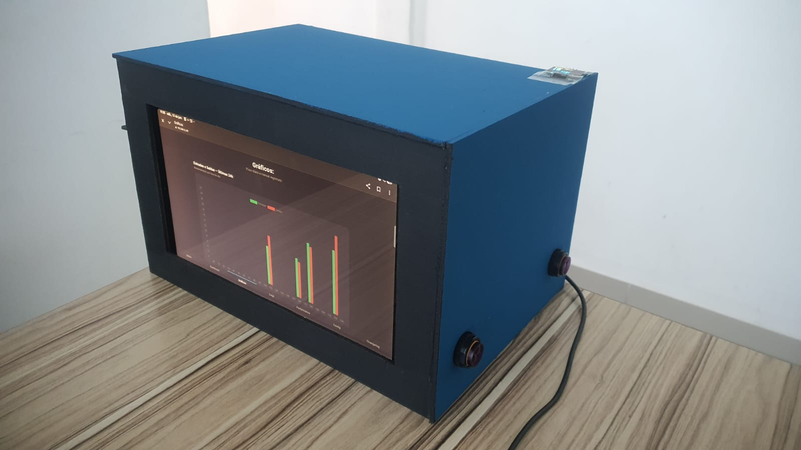
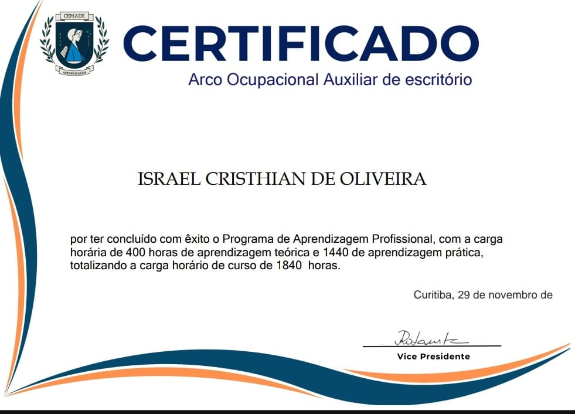
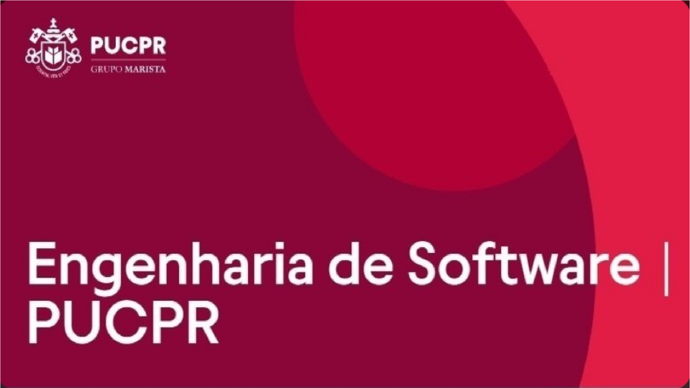

2022 — 2024
Assistente de escritório / Atendimento ao cliente
URBS
Na urbs fazia coisinhas
PERFIL
Sou uma pessoa movida pela curiosidade e pela vontade de transformar ideias em algo concreto. Gosto de explorar diferentes áreas da tecnologia e da criação, entender como as coisas funcionam e, principalmente, aprender fazendo. Minha trajetória ainda está em construção, mas venho desenvolvendo projetos que me permitem experimentar diferentes formas de criar e resolver problemas — desde tecnologia e desenvolvimento até projetos visuais e produção musical. Para mim, um projeto não precisa nascer perfeito: gosto do processo de testar, errar, pesquisar, melhorar e descobrir novas possibilidades ao longo do caminho. Quero continuar expandindo meus conhecimentos para além de uma única área, aprendendo a unir programação, design, criatividade e comunicação para construir coisas que tenham um propósito. É justamente essa possibilidade de aprender por meio de desafios reais, trocar conhecimento com outras pessoas e transformar ideias em projetos que me atrai na Apple Developer Academy. Vejo a Academy como uma oportunidade de sair da zona de conforto, aprender com pessoas diferentes de mim e descobrir até onde posso levar aquilo que sou capaz de criar.
EXPERIÊNCIA
URBS
Na urbs fazia coisinhas
PROJETOS
Projetos acadêmicos e experimentais que representam minha experiência prática, minha evolução técnica e minha participação em diferentes etapas de desenvolvimento.
Projeto acadêmico · 2026

O UniRide é uma plataforma web de caronas desenvolvida para estudantes universitários, conectando alunos que possuem vagas em seus veículos a estudantes que precisam de transporte até o campus. A proposta busca reduzir os custos de transporte e incentivar a colaboração entre os alunos.
Participação no desenvolvimento de uma aplicação web completa, envolvendo a implementação e integração de funcionalidades distribuídas entre os módulos de cadastro, autenticação, viagens, perfil de usuário, chat e administração, utilizando tecnologias de frontend, backend e banco de dados.
O projeto foi desenvolvido de forma modular e organizado em Sprints, partindo do levantamento e documentação dos requisitos e da modelagem UML até a implementação da aplicação. A estrutura inclui módulos independentes para cadastro, login, viagens, perfil, chat e administração, com PHP responsável pela lógica e comunicação com o banco de dados MySQL. O projeto também utiliza sessões PHP, validações de formulários e componentes de interface com JavaScript e SweetAlert2.
O desenvolvimento proporcionou experiência prática com modelagem UML, desenvolvimento web utilizando PHP e MySQL, gerenciamento de sessões e controle de acesso, validação de formulários, organização modular de sistemas, integração entre frontend e backend e planejamento de desenvolvimento em Sprints. Também envolveu o tratamento de problemas relacionados a sessões, banco de dados e restrições de chaves estrangeiras.
Projeto acadêmico · 2025
O WALLE - Estufa Inteligente é um protótipo acadêmico de IoT e automação desenvolvido para monitorar e controlar o ambiente de uma estufa. O sistema utiliza sensores conectados a um ESP32 para acompanhar temperatura e umidade do solo e realiza a irrigação automaticamente conforme parâmetros definidos. Os dados são disponibilizados em um dashboard web em tempo real, com o objetivo de reduzir o desperdício de água e otimizar o crescimento das plantas.
Participação no desenvolvimento do protótipo de IoT, envolvendo a integração entre hardware, sensores, sistema de irrigação e interface web. O projeto reúne desenvolvimento frontend, comunicação com o ESP32, armazenamento de dados em tempo real e organização dos diferentes componentes necessários para o funcionamento da estufa automatizada.
O sistema foi estruturado em três partes principais: frontend, código do ESP32 e documentação. O ESP32 foi integrado aos sensores DHT11 e de umidade do solo e aos relés responsáveis pelo controle da irrigação. No frontend, foi desenvolvido um dashboard responsivo com HTML5, CSS3, Bootstrap 5 e JavaScript, utilizando Chart.js para exibição dinâmica dos dados. O Firebase Realtime Database foi utilizado para armazenar os dados dos sensores e seu histórico em tempo real.
O projeto proporcionou experiência prática na integração entre hardware e software, desenvolvimento de soluções IoT, utilização do ESP32, leitura de sensores e automação de processos físicos por meio de relés. Também envolveu aprendizado em desenvolvimento de dashboards web responsivos, visualização de dados com gráficos, comunicação em tempo real com Firebase e integração entre frontend e dispositivos embarcados.
Projeto acadêmico · 2025

O ProfissiON é uma plataforma web interativa desenvolvida para ajudar estudantes a explorar e compreender diferentes carreiras na área de tecnologia da informação. A aplicação busca auxiliar na escolha profissional por meio de questionários, recomendações de carreiras, comparação entre profissões, trilhas de estudo, busca por habilidades e informações sobre o mercado de trabalho.
Participação no desenvolvimento de uma plataforma web voltada à orientação profissional em tecnologia, envolvendo a construção da interface da aplicação, implementação da lógica de interação e integração dos diferentes recursos previstos para a exploração e comparação de carreiras. O projeto foi estruturado para atender diferentes perfis de usuário e organizar informações profissionais e educacionais de forma acessível.
O desenvolvimento foi organizado em uma arquitetura dividida entre frontend, backend, banco de dados e documentação. A interface utiliza HTML5, CSS3 e JavaScript, enquanto o backend é baseado em Node.js e os dados são estruturados utilizando SQL. A aplicação foi planejada a partir de funcionalidades como quiz vocacional, recomendações de carreira, comparação de profissões, trilhas de estudo, busca por habilidades e informações sobre o mercado.
O projeto proporcionou experiência no desenvolvimento de aplicações web com separação entre frontend, backend e banco de dados, além de contato com Node.js, JavaScript e SQL. Também envolveu aprendizado na organização de sistemas com diferentes perfis de acesso e na construção de funcionalidades voltadas à recomendação, comparação e apresentação de informações de forma estruturada.
Projeto acadêmico · 2026


O Analista de Fluxo é um sistema embarcado desenvolvido com ESP32 para monitorar em tempo real a entrada e saída de pessoas em um ambiente, calcular a lotação ocupada e disponibilizar essas informações por meio de um servidor web acessível na mesma rede. O sistema combina sensores infravermelhos, encoder de catraca, display OLED e alertas sonoros, além de armazenar dados históricos, logs e métricas de desempenho.
Responsável pela estrutura principal do firmware do sistema, com foco na implementação da multitarefa utilizando FreeRTOS e na distribuição das responsabilidades entre os dois núcleos do ESP32. Também atuei na implementação da persistência de dados e logs em LittleFS, garantindo que as informações do sistema fossem preservadas entre reinicializações e quedas de energia.
O processamento foi dividido entre duas tarefas do FreeRTOS fixadas em núcleos diferentes. A TaskSensores realiza a leitura dos sensores IR, o processamento do encoder e métricas de desempenho, enquanto o loop principal administra a rede, o servidor web, a API JSON, o display OLED, a sincronização de horário via NTP e a persistência periódica dos dados. O acesso às informações compartilhadas entre os núcleos é protegido por mutexes, enquanto o LittleFS armazena dados, gráficos, logs e páginas web.
O projeto aprofundou conhecimentos em programação concorrente com FreeRTOS em microcontroladores dual-core, sincronização entre tarefas com mutexes, interrupções de hardware, máquinas de estado para tratamento de sensores, persistência de dados estruturados em LittleFS e desenvolvimento de servidor web e API REST diretamente no ESP32. Também proporcionou experiência com profiling, monitoramento de CPU, memória e stack das tarefas e integração entre sensores, atuadores e comunicação de rede.
Projeto pessoal · Primeiro projeto em Python

Sistema desenvolvido em Python para criação e gerenciamento de fichas de RPG inspiradas em D&D. O projeto permite criar personagens, editar e salvar fichas, gerar documentos em PDF e também oferece ferramentas auxiliares para jogadores e mestres, como inventário, rolagem de dados, fichas de monstros e diário de aventura.
Desenvolvi o projeto com dois colégas de sala. Fui responsável pela lógica do sistema, criação das fichas de jogador e mestre, Lógica e estética visual dos dados e parte das fichas em PDF. Persistência dos dados e geração dos PDFs foram desenvolvidas pelos meus colegolas.
O projeto foi desenvolvido de forma experimental, conforme novas ideias e necessidades surgiam. Começamos pela criação das fichas e posteriormente adicionei funcionalidades para edição, gerenciamento e ferramentas de apoio às sessões de RPG.
Foi meu primeiro contato mais aprofundado com Python e um projeto importante para aprender sobre modularização, manipulação de arquivos, persistência de dados, geração de PDFs e construção de sistemas interativos.
FORMAÇÃO
Pontifícia Universidade Católica do Paraná
Colégio Estadual Moradias Monteiro Lobato
COMPETÊNCIAS
CERTIFICADOS
Certificações, cursos e formações complementares que contribuíram para minha formação técnica e profissional.
2026
Cisco Networking Academy
Certificado obtido após concluir o curso de Introdução a Cibersegurança, abordando conceitos fundamentais de segurança cibernética, ameaças e vulnerabilidades, práticas de proteção e conscientização sobre segurança digital.

2026
AEFSPR
Certificado obtido após concluir 400 horas de aprendizado teórico na instituição AEFSPR, e 1440 horas de aprendizado prático trabalhando na empresa URBS, totalizando 1840 horas de aprendizado e experiência prática.

2026
Pontifícia Universidade Católica do Paraná
Disciplinas que compoem o certificado: Raciocínio Algorítmico - Resolução de Problemas Estruturados em Computação - Banco de Dados - Programação Orientada a Objetos - Experiência Criativa: Projetando Soluções Computacionais - Experiência Criativa: Navegando pela Engenharia de Software
2026
Pontifícia Universidade Católica do Paraná
Disciplinas que compoem o certificado: Raciocínio Algorítmico - Resolução de Problemas Estruturados em Computação - Banco de Dados - Programação Web- Programação Orientada a Objetos - Experiência Criativa: Projetando Soluções Computacionais - Experiência Criativa: Navegando pela Engenharia de Software
2026
Pontifícia Universidade Católica do Paraná
Disciplinas que compoem o certificado: Modelagem de Processos - Engenharia de Requisitos - Criação de Modelos Computacionais - Interface Humano Computador - Experiência Criativa: Projetando Soluções Computacionais - Experiência Criativa: Navegando pela Engenharia de Software
CONTATO
Caso queira conhecer melhor meu trabalho, projetos ou trajetória, estes são os canais onde posso ser encontrado.